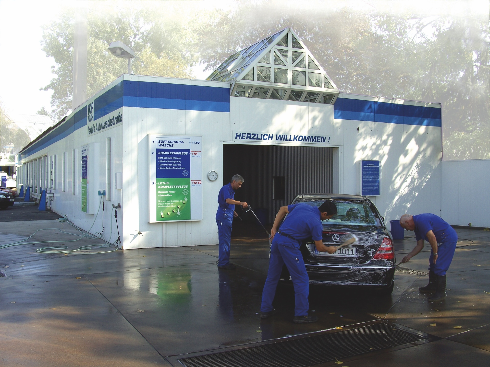
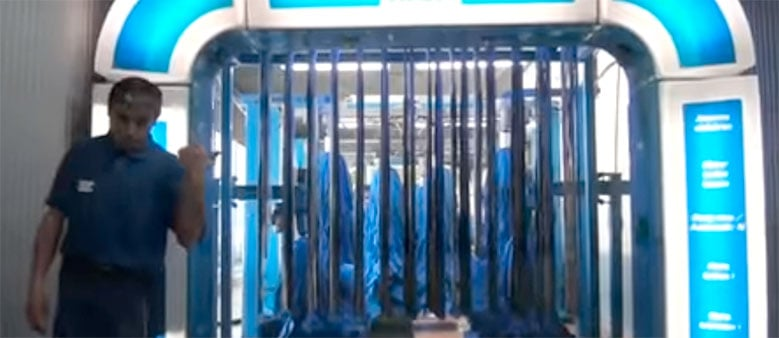
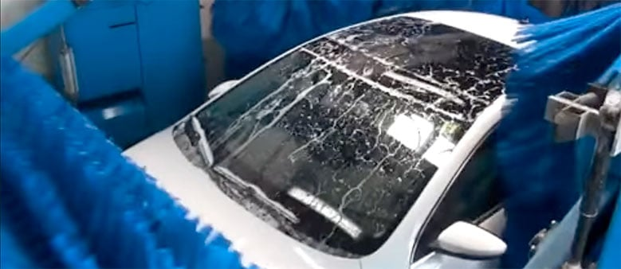
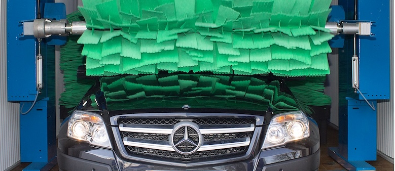
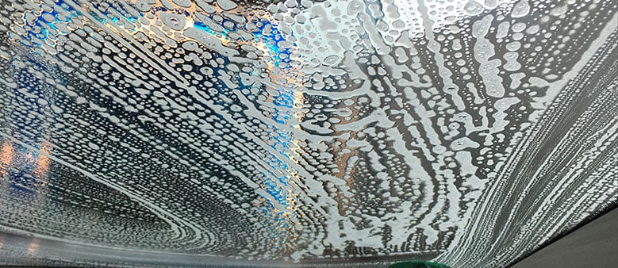
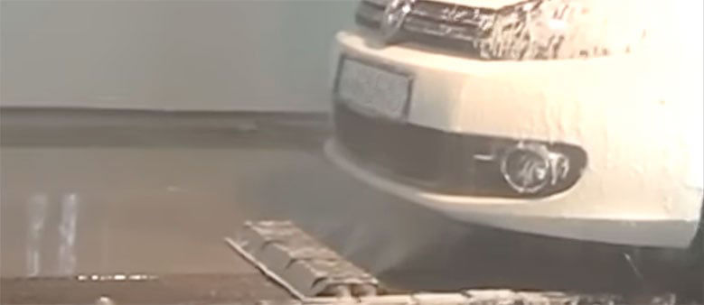
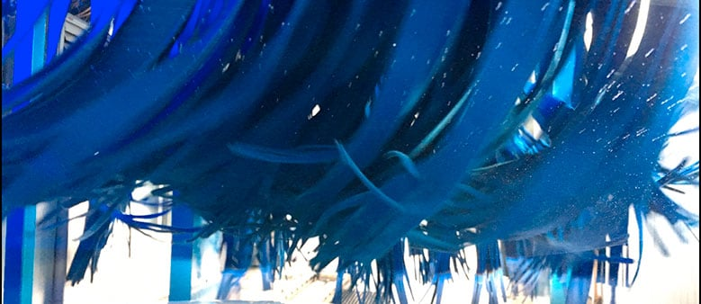

Über uns
Ein Blick in unsere Waschstraßen
TOP WASH ist die Marke der TOP WASH Autopflege GmbH. Was uns von anderen Autowaschanlagen unterscheidet, ist vor allem eines: unser Team. Bei TOP WASH wird nach wie vor gründlich von Hand vorgewaschen, bevor es in die Textilwaschstraße geht – die folgenden Bilder zeigen diesen Ablauf an unseren Standorten in Rhein-Main.












Mehr über den Ablauf erfahren
Die vollständigen drei Wasch-Schritte – Handvorwäsche, Textilwäsche-Stufen und Trocknung – erklären wir im Detail auf der Startseite.